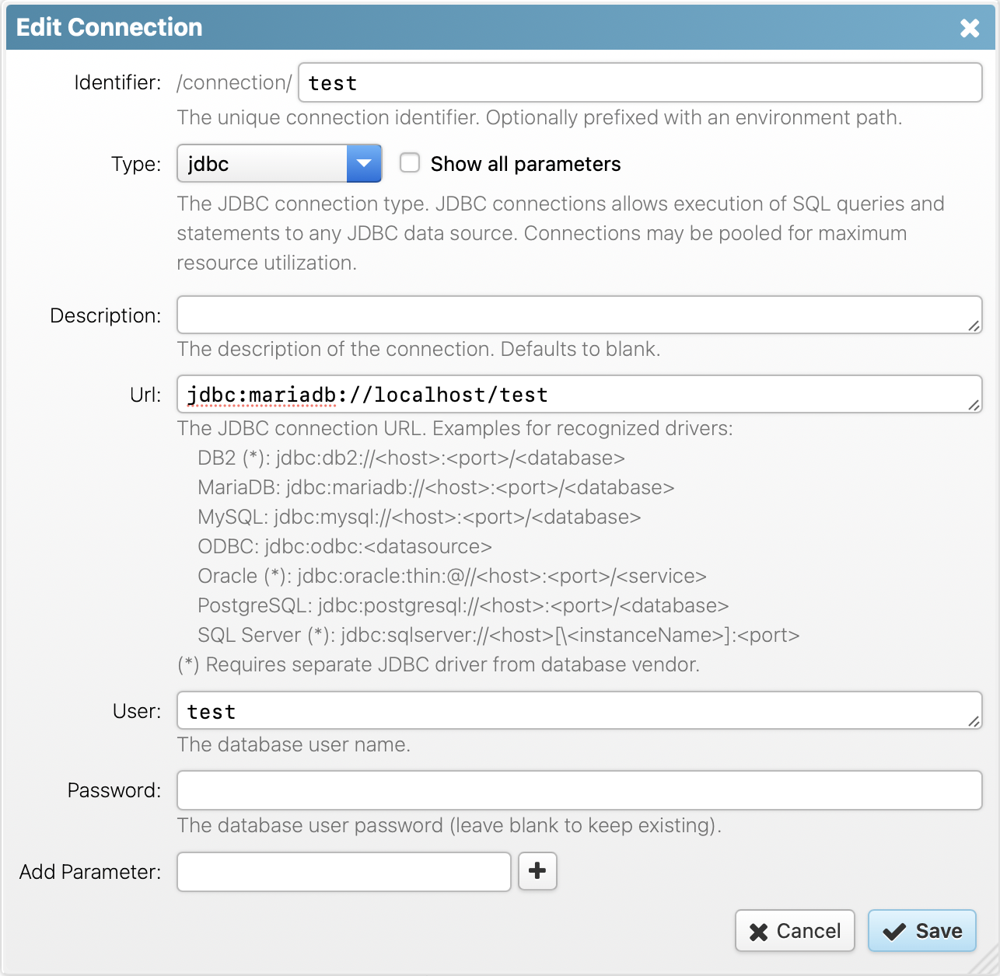

RapidContext
Access > Discovery > Insight
www.rapidcontext.com
| Documentation | JDBC Plug-In |
JDBC Plug-In
The JDBC (Java Database Connectivity) plug-in provides the ability to access databases and execute SQL queries and statements. Database connections are automatically pooled and reused to improve resource efficiency and access speed for each database used.
1. Basic Configuration
In order for the JDBC plug-in to access a database, the corresponding JDBC driver (JAR file) must be installed on the RapidContext server. The plug-in comes bundled with drivers for MariaDB, MySQL and PostgreSQL. Other database vendors impose restrictions on driver distribution, so the JDBC driver must be installed locally. Follow the following steps to install a custom JDBC driver:
- Transfer the JDBC driver (JAR file) to the RapidContext server
- Go to the plugin/local/ directory in RapidContext
- Create a lib/ subdirectory (if one didn't already exist)
- Copy the JDBC driver to the new directory
- Use the
Restart
button in thePlug-in
tab in the Admin app
The next step is to create one or more connections using JDBC. The screenshot below shows how to create a simple test connection to a local MySQL database. Please consult your database vendor documentation for information about the correct connection URL (and possibly class name).

Notice
Only the drivers URL formats listed in the connection help are
recognized by the JDBC plug-in. Press the Show all parameters
checkbox to be able to set the custom JDBC driver Java class needed for
other data sources.
2. Built-in Procedures & Procedure Types
The JDBC plug-in provides a number of built-in procedures and predefined procedure types:
- The jdbc.query procedure type —
Used for creating procedures that execute an SQL query, i.e.
SELECT
. Supports inserting procedure arguments into the SQL text. - The jdbc.statement procedure type —
Used for creating procedures that execute an SQL statement, i.e.
INSERT
,UPDATE
orDELETE
(among others). Supports inserting procedure arguments into the SQL text. - The PlugIn.Jdbc.Query procedure —
A built-in procedure for executing an SQL query, i.e.
SELECT
. Only accessible to users with the admin role. This procedure should normally only be used for testing and development. - The PlugIn.Jdbc.Statement procedure —
A built-in procedure for executing an SQL statement, i.e.
INSERT
,UPDATE
orDELETE
(among others). Only accessible to users with the admin role. This procedure should normally only be used for testing and development.
3. Query Result Mappings
JDBC query procedures can map the database result set to a JSON data structure in various ways. By default, all rows are returned in an array and each row is mapped to an object with properties corresponding to the column names:
PlugIn.Jdbc.Query('test','SELECT * FROM fruits')
--> [{'id': 1, 'value': 'apple'},
{'id': 2, 'value': 'banana'},
{'id': 3, 'value': 'clementine'}]
This default mapping can be modified using the flags
parameter when editing or creating a procedure. The available flags are as
follows:
- binary-data — Returns any binary value (e.g.
BINARY
,BLOB
,VARBINARY
orLONG
columns) as a byte array instead of a string. This is sometimes necessary for processing data without encoding issues.
Note: JSON does not support binary data, so the result cannot be transferred from the server if this flag is set. It can only be processed by another procedure on the same server. - metadata — Adds a wrapper object with columns and rows properties to the result. The columns array contains meta-data information about the result structure, whereas rows contain the result rows.
- no-column-names — Omits the mapping of column names to properties in the result row objects. Instead each row will be returned as an array of values (in column order). This is impractical, but more space efficient for large results (lowering transfer time and bandwidth usage).
- no-native-types — Omits the mapping of values to numbers or booleans, using strings for all values. This is sometimes necessary when the database number type isn't compatible with JavaScript.
- single-column — Returns an array of the first column of the result. This omits the dictionary or array wrapper around the row result, making usage simpler. If multiple columns are encountered, an error will be thrown (instead of silently ignoring it).
- single-row — Returns only the first row of the result or null if no row was matched. This omits the array wrapper around the result, making usage simpler. If multiple rows are encountered, an error will be thrown (instead of silently ignoring it).
Notice
Date and timestamp values are currently always converted into ISO
datetime strings without timezone (e.g. 2009-01-31 23:59:59
). This
mapping will likely change in future versions, so use string conversion in
the SQL query if a specific date and time format is desired.
4. Statement Results
In contrast to SQL queries, the SQL statements (i.e.
INSERT
, UPDATE
or DELETE
)
normally have no results. When inserting new table rows however, sometimes
unique keys are automatically generated by the database engine. If that
happens, the first generated key will be returned as the procedure result
(depends on JDBC driver).
PlugIn.Jdbc.Statement('jdbc.example','INSERT INTO test VALUES (1,2,3)')
--> '4711'
5. Parameter Substitution
The SQL text may contain procedure call arguments (for
jdbc.query and jdbc.statement procedures). These are
substituted with the procedure argument values at call time. Each procedure
argument name must be prefixed with a :
character in the
SQL text in order to be replaced:
-- Substituting a 'name' procedure argument
SELECT *
FROM customer
WHERE name = :name
The procedure argument value will always be properly escaped and quoted
(for string values) for insertion into the SQL text. When using parameter
substitution inside a WHERE
block, the comparison operator
preceding the replacement value will also be analysed and possibly
replaced for increased flexibility. See the list below for the SQL operators
recognized and processed in this way:
- = — If the value is null or an empty array,
the operator is replaced by
IS NULL
. If the value is an array, it is replaced by the correspondingIN (...)
construct. - != — If the value is null or an empty array,
the operator is replaced by
IS NOT NULL
. If the value is an array, it is replaced by the correspondingNOT IN (...)
construct. - ?= — If the value is null or an empty array,
the condition is omitted (replaced by a
1=1
test). Otherwise similar to the processing for the=
operator. - ?!= — If the value is null or an empty array,
the condition is omitted (replaced by a
1=1test). Otherwise similar to the processing for the!=
operator.
6. Transactions & Connection Pooling
Connections created with the JDBC plug-in are normally pooled in the server. This means that connections are not closed immediately, but kept alive for a period of time in order to be reused. This greatly speeds up access times to most data sources, since connection creation, handshake and destruction can be relatively costly. This behavior can be fine-tuned as follows:
- Launch or go to the Admin app
- Choose the
Connections
tab - Select the connection to edit and press the edit icon
- In the connection edit dialog, press the
Show all parameters
checkbox - Edit the
Max Open
value to modify the size of the connection pool (defaults to 4 connections) - Edit the
Max Idle Secs
value to modify the time-to-live for a connection (defaults to 10 minutes)
Transactions are automatically used by RapidContext when the underlying JDBC driver and database support them. The process works as follows:
- A web browser (client) initiates a procedure call
- All connections needed by the procedure (and any sub-procedures) are reserved
- A new transaction is initiated for each connection supporting it
- The procedure (and any sub-procedures) are executed
- If an error is thrown to the client, all transactions are rolled back
- Otherwise, all transactions are committed
Transaction commits or rollbacks can also be forced from JavaScript procedures, by calling the commit() or rollback() methods directly on the JDBC connection object.